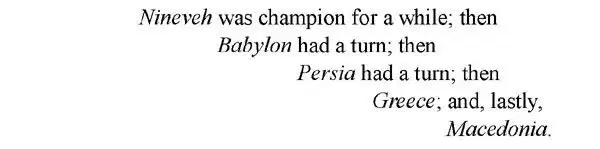

31
Picking a Fight
寻衅斗殴

EVERY dog has his day.
A tennis or track champion wins over the one who was champion before and then has a few years during which he or she is unbeaten. Sooner or later, however, some younger and better athlete wins and in turn takes the championship.
It seems almost the same way with countries as with people. One country wins the championship from another, holds it for a few years, and then, when older, finally loses it to some newcomer.
We have seen that

You may wonder who was to be the next champion after Alexander's empire went to pieces—who was to have the next turn.
When Alexander was conquering the world, he went east toward the rising sun, and south. He paid little attention to the country to the west toward the setting sun. Rome, which we have not heard of for some time, was then only a small town with narrow streets and frame houses. It was not nearly important enough for Alexander to think much about. Rome itself was not thinking of anything then except keeping the neighboring soldiers out.
In the course of time, however, Rome began to grow up and was not only able to take care of itself but could put up a very stiff fight. Rome fought and won battles with most of the other towns in Italy, until at last Rome became champion of the whole of the boot. Then the Romans began to look around to see what other countries there were outside of Italy that they might conquer.
Perhaps you have noticed that Italy, the boot, seems about to kick a little island as if it were a football. This island is Sicily, and just opposite Sicily across the Mediterranean in North Africa was a city called Carthage.
Carthage had been founded by the Phoenicians many years before and had become a very rich and powerful city. Over the years, Phoenicians mixed with the local North Africans called Berbers and formed a unique culture.
They planted big farms with fruit trees and olive trees. They owned herds of cattle and sheep and horses. Wealthy families owned large country estates.
As Carthage was by the sea, it had built many ships and traded with all the other seaports along the Mediterranean, just as the old Phoenician cities of Tyre and Sidon had done. By now, Carthage controlled the whole western end of the Mediterranean Sea.
Carthage did not like to see Rome getting so strong and growing so big and becoming so powerful. In other words, Carthage felt challenged by Rome.
Rome, on her side, was jealous of the wealth and trade of Carthage. So Romans anxiously looked around for some excuse to get into a fight with their rival across the sea.
Now, you know how easy it is to pick a quarrel and start a fight when you are looking for trouble. One boy sticks out his tongue, the other gives him a kick, and the fight is on.
Well, two countries are at times just like little boys; they start a fight with just as little excuse, and though they call the fight war it is nothing but a scrap . Only there are no parents to come along and make them both go home.
It didn't take long for Rome and Carthage to find an excuse, and a war was started between them. The Romans called this fight a Punic War, for Punic was their name for Phoenician, and the Carthaginians originally were Phoenicians.
As Carthage was across the water, the Romans could not get there except in boats. But Rome had no boats. Rome was not on the seashore and knew nothing about making boats, nor about sailing them.
The Carthaginians, on the other hand, had many, many boats, and were old and experienced sailors.
Romans happened to find the wreck of a Carthaginian ship that had been cast ashore, and they at once set to work to make a copy of it. In a remarkably short time they had built one ship, then another and another, until they had a great many ships. Then, though the Romans were new at the game, they attacked the Carthaginian fleet.
It would seem that the Carthaginians could easily have won, for the Romans knew so little about boats. In sea battles, before this, the fighting had been done by running into the enemy and ramming and sinking their ships.
The Romans knew they were no match for the Carthaginians in this sort of fighting. So they thought up a way in which they could fight them as on land.
To do this they invented a kind of big hook which they called a crow . The idea was for a ship to run close alongside a Carthaginian ship and, instead of trying to sink her, to throw out this big hook or crow , catch hold of the other ship, and pull both boats close together. The Roman soldiers would then scramble over the sides into the enemy's boat and fight them the same way they would on land.
The scheme worked.
This new kind of fighting took the Carthaginians by surprise, and they were no match for the Romans at first.
Rome did not have things all her own way by any means. The Carthaginians soon learned how to fight in this fashion, too. So Rome lost, as well as won, battles both on land and on sea. At last Rome did win, and the Carthaginians were beaten. Thus ended the first Punic War.
【中文阅读】
有一句谚语说：“人人皆有得意时。”
一位网球或田径冠军赢了上一任冠军，然后有那么几年，他（她）都保持不败，但是，早晚会有更年轻、更优秀的运动员出现，继而赢得冠军的宝座。
国家的兴衰沉浮似乎也和人一样。一个国家从另一个国家那里赢得霸主地位，把这个位置保持几年，然后，国家变得衰弱了，最终又由后起之秀接替了它的地位。
我们看到
尼尼微一度曾是霸主；接下来
轮到了巴比伦；接下来
轮到了波斯；接下来
是希腊；接着，最后是
马其顿。
你们可能会猜想亚历山大的帝国瓦解后，谁会是下一任霸主——谁会来接这个班呢？
亚历山大在征服世界的时候，他向着太阳升起的东方和南方挺进，而不大留意日落方向的西方国家。我们有些时候没听说罗马了，当时的罗马仅是个街道狭窄的小城镇，房子也都是些小木屋。这种微不足道的地方亚历山大是不会放在心上的。那时罗马除了要维持自身的安全，防止邻国军队侵犯，并无其他非分之想。
但是，罗马逐渐成长起来，终于不仅能保全自己，而且有能力打一场硬仗了。罗马和意大利大多数城邦都打了仗，而且都打赢了，最终成了整个“靴子”的霸主。接着，罗马开始环顾四周，看看意大利之外有哪些其他国家可以让他们征服。
可能你已经注意到了，意大利这只“靴子”看上去好像正要把它前面的一个小岛当足球踢走。这个岛就是西西里，在西西里岛正对面隔着地中海，是北非的一个城市，叫迦太基。
迦太基是多年前腓尼基人建造的，已经发展为一个非常富裕、强大的城市。多年来，腓尼基人和当地叫“柏柏尔人”的北非人交往融合，形成了一种独特的文明。
他们在农场里种植了大片的果树和橄榄树，拥有成群的牛、羊和马。富裕的人家拥有巨大的庄园。
迦太基临海，所以造了很多的船只，和地中海沿岸的其他海港城市进行贸易往来，这与古代腓尼基的城市蒂尔和西顿的做法是一样的。到这个时候，迦太基已经控制了地中海的整个西部地区。
迦太基不愿看到罗马变得这么强大、发展得这么庞大和拥有这么大的权势。换句话说，迦太基感到受到了罗马的挑战。
而罗马这一方，也嫉妒迦太基的富庶和海上贸易。因此，罗马人急切地四下找借口要和他们隔海相望的对手打一仗。
你现在明白了吧，如果是成心想找麻烦，那挑起争端和引发战争是再容易不过啦。一个男孩伸了伸舌头，另一个男孩踢了他一脚，然后架就打了起来。
哈，两个国家有时就像两个小男孩一样，找个碴儿就打起来了，尽管他们把这叫做“战争”，其实与小孩打架没什么区别，只不过，没有家长过来，各自把自己的孩子领回家。
罗马和迦太基没过多久就找到了交战的理由，于是双方之间的战争就开始了。罗马人把这场战争称为“布匿战争”，因为“布匿”就是他们对腓尼基人的称呼，而迦太基人原本就是腓尼基人的后代。
因为迦太基在海的那边，所以罗马人除了坐船无法到对岸去。但是，罗马没有船。罗马不在海边，对于造船一无所知，也不会驾船航行。
而另一方面，迦太基人却有很多很多的船，有很多经验丰富的老水手。
罗马人碰巧发现了一艘被丢弃在岸边的迦太基人的船只残骸，他们立刻行动起来，按这条船的样子来复制一条船。在非常短的时间内，他们就造出了一艘船，然后造了一艘又一艘，最后他们拥有了大量的船只。接着，罗马人攻击了迦太基的舰队，尽管他们在海战方面还是新手。
迦太基人似乎本可以轻易获胜，因为罗马人对于船还很生疏。在这以前的海战中，一般作战方式都是驾船直接冲向敌船，撞毁和撞沉对方的战船。
罗马人知道以这种方式作战，他们肯定不是迦太基人的对手。因此，他们想出了一个办法，用这个办法他们可以像在陆地上一样和迦太基人打海战。
为了做到这一点，他们发明了一种巨大的钩子，把它叫做“乌鸦”。他们打算让自己的船驶近迦太基人战船的一侧，不是去撞沉它，而是扔出这个巨大的钩子，也就是“乌鸦”，勾住对方的船，再把两艘船拉近到一起。接下来，罗马士兵就从这两艘船的船舷爬过去登上敌人的船，然后他们就像在陆地上作战一样和敌人短兵相接。
这个方案奏效了。
这种新的作战方式使迦太基人措手不及，刚开始他们敌不过罗马人。
但罗马人并不是想赢就能赢。迦太基人很快也学会了用这种方式作战。因此，在海陆大战中罗马有赢也有输。最后，罗马赢了，迦太基人被打败了。第一次“布匿战争”就这样结束了。